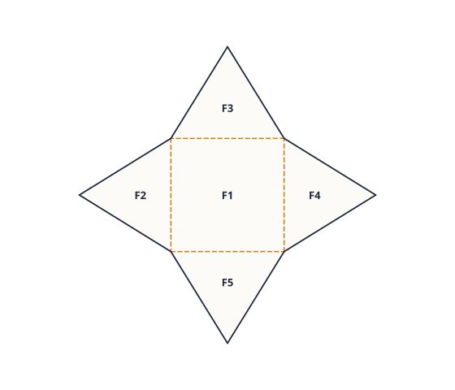
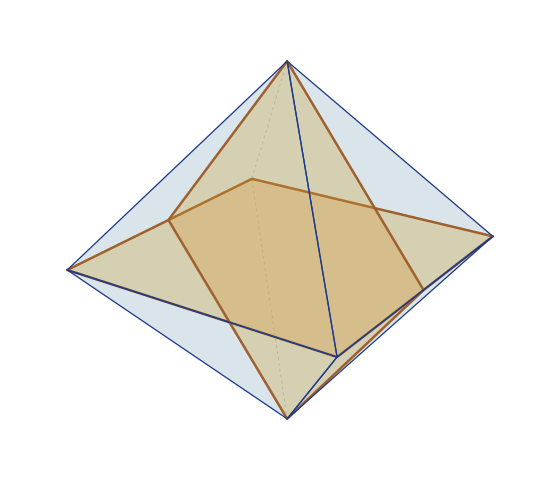

Egyptian Seked Mensuration, 3D Spreads & Polyhedral Relatives¶
The Royal Cubit · Rhind Papyrus Seked 5½ · Rational Trigonometry · Leonardo’s Vacua · Golden Bipyramid
If a pyramid is 250 cubits high and the side of its base 360 cubits long, what is its seked? Take 1/2 of 360, it makes 180. Multiply 180 by 7, it makes 1260. Divide 1260 by 250, it makes 5 1/25 palms. This is its seked.
—Ahmes the Scribe, Rhind Mathematical Papyrus (c. 1550 BCE), Problem 56
The Old Kingdom Royal Cubit & Rhind Mathematical Papyrus¶
Ancient Egyptian architectural mensuration was governed by the Royal Cubit (meh niswt), the standard metrological unit of Old Kingdom monumental construction:
The slope of an inclined masonry face was not measured by an angular degree (\(^\circ\)), which was unknown to Egyptian geometry, but by the seked (sqd).
As formalized in Problems 56 to 60 of the Rhind Mathematical Papyrus (British Museum EA 10057/8), the seked expresses the horizontal setback (in palms and digits) per vertical rise of one Royal Cubit:
For a pyramid with half-base \(a\) and vertical height \(h\), the slope angle \(\alpha\) satisfies:
Flinders Petrie’s 1883 Survey and the Historical Seked 5½¶
In 1880–1882, Sir William Matthew Flinders Petrie conducted the first modern scientific triangulation survey of the Giza plateau, published in The Pyramids and Temples of Gizeh (1883).
Petrie established the baseline parameters of the Great Pyramid of Khufu:
Mean Base Side Length: \(9068.8 \pm 0.5 \text{ inches}\) (\(230.36 \text{ m}\));
Original Apex Height: \(5776.0 \pm 7.0 \text{ inches}\) (\(146.71 \text{ m}\));
Calculated Royal Cubit Length: \(20.620 \pm 0.005 \text{ inches}\) (\(52.375 \text{ cm}\)).
Dividing the dimensions by the Royal Cubit length gives the intended integer blueprint of the Fourth Dynasty royal architect Hemiunu:
The ratio of vertical height to half-base is:
The resulting Egyptian seked is:
Expressed in digits (\(1 \text{ palm} = 4 \text{ digits}\)):
The casing stone slope angle measured by Petrie on surviving in-situ Tura limestone casing blocks was \(51^\circ 52' \pm 2'\). The exact seked \(14:11\) angle is:
matching the archaeological casing stones to within less than two minutes of arc!
Exact 3D Rational Trigonometry of Square Pyramids¶
In Rational Trigonometry (Wildberger, Divine Proportions, 2005), transcendental trigonometric functions (\(\cos, \sin, \tan\)) and angle measures are replaced by algebraic quadrances (squared distances) and spreads (squared sines of angles):
For a square pyramid with unit half-base \(a = 1\) and vertical apex height \(h\), all 3D angular relationships evaluate to exact rational numbers over \(\mathbb{Q}\) or closed-form expressions over \(\mathbb{Q}(\phi)\):
1. Face Slope Spread \(s_{\text{slope}}\)¶
The meridian right triangle has base \(1\), height \(h\), and apothem hypotenuse \(s = \sqrt{1 + h^2}\):
Kepler Golden Pyramid (\(h^2 = \phi\)):
\[s_{\text{slope}} = \frac{\phi}{1 + \phi} = \frac{\phi}{\phi^2} = \phi^{-1} = \phi - 1 \approx 0.6180339887\]The slope spread equals identically the reciprocal of the golden ratio!
Seked 14:11 Pyramid (\(h = 14/11 \implies h^2 = 196/121\)):
\[s_{\text{slope}} = \frac{196/121}{1 + 196/121} = \frac{196}{121 + 196} = \frac{196}{317} \approx 0.61829653\]Half-Octahedron (\(h = \sqrt{2} \implies h^2 = 2\)):
\[s_{\text{slope}} = \frac{2}{1 + 2} = \frac{2}{3} \approx 0.66666667\]
2. Adjacent-Face Dihedral Spread \(s_{\text{adj}}\)¶
Let \(\mathbf{n}_E = (h, 0, 1)\) and \(\mathbf{n}_N = (0, h, 1)\) be normal vectors to the East and North lateral faces. Their quadrances and dot product are:
The spread between the planes of adjacent faces is:
Kepler Golden Pyramid (\(h^2 = \phi \implies 1 + h^2 = \phi^2\), \(h^4 = \phi^2\)):
\[s_{\text{adj}} = \frac{\phi^2 + 2\phi}{\phi^4} = \frac{\phi + 2}{\phi^3} = \frac{\phi + 2}{2\phi + 1} = 3\phi - 4 \approx 0.854101966\]An exact linear expression in :math:`mathbb{Q}(phi)`!
Seked 14:11 Pyramid (\(h^2 = 196/121\)):
\[1 + h^2 = \frac{317}{121} \implies s_{\text{adj}} = 1 - \frac{121^2}{317^2} = \frac{100489 - 14641}{100489} = \frac{85848}{100489} \approx 0.85430246\]Half-Octahedron (\(h^2 = 2\)):
\[1 + h^2 = 3 \implies s_{\text{adj}} = 1 - \frac{1}{9} = \frac{8}{9} \approx 0.88888889\]
3. Opposite-Apothem Apex Spread \(s_{\text{apex}}\)¶
The meridian triangle across opposite faces has base \(2\), height \(h\), and apex angle \(2\beta\) with \(\beta = 90^\circ - \alpha\):
Kepler Golden Pyramid:
\[s_{\text{apex}} = \frac{4\phi}{\phi^4} = \frac{4}{\phi^3} = 4\phi^{-3} = 8\phi - 12 \approx 0.94427191\]Seked 14:11 Pyramid:
\[s_{\text{apex}} = \frac{4 \times (196/121)}{(317/121)^2} = \frac{784 \times 121}{100489} = \frac{94864}{100489} \approx 0.94402372\]Half-Octahedron:
\[s_{\text{apex}} = \frac{4 \times 2}{3^2} = \frac{8}{9} \approx 0.88888889\]
Note
In the Half-Octahedron, the adjacent dihedral spread and the opposite apex spread are identically equal:
The Unfolded 2D Star Net of the Golden Pyramid¶
The papercraft net of the square pyramid consists of a central square base surrounded by four hinged isosceles triangular faces:

Unfolded 2D star net layout of the Kepler Golden Pyramid: central :math:`2 times 2` square base (Face 1) unfolded along dashed interior hinge lines to four golden-apothem isosceles faces (:math:`s = phi`, Faces 2–5).¶
In the Kepler net:
Base: \(2 \times 2\) square (\(A_{\text{base}} = 4\)).
Four triangular petals: base \(2\), altitude \(s = \phi\), lateral edge \(e = \sqrt{\phi + 2}\).
Face area of each petal: \(A = \frac{1}{2}(2)(\phi) = \phi\).
Total unfolded net area: \(4 + 4\phi = 4\phi^2\).
Leonardo da Vinci’s Pyramis Quadrata Vacua (Genus g = 4)¶
In Luca Pacioli’s De Divina Proportione (Venice, 1509), Leonardo da Vinci introduced the vacuated polyhedral form (corpus vacuum): replacing opaque facets with hollow, mitered timber beams to reveal the internal geometric structure of three-dimensional solids.
For a square pyramid with aperture ratio \(\mu = 3/4\) and shell thickness \(\tau = 7/8\), the vacuation operator:
hollows out the square base and four lateral triangular faces, converting the solid into a 3D orientable manifold with five portals:
1 square portal in the base;
4 triangular portals in the lateral faces;
The topological Euler characteristic is:
\[\chi = V - E + F = 2 - 2g \implies g = 1 - \frac{\chi}{2}\]With \(\chi = -6\), the vacuated pyramid is a manifold of genus :math:`g = 4` (four through-holes linking the five portals).
The Golden Square Bipyramid vs. The Regular Octahedron¶
Reflecting the Kepler Golden Pyramid across its square base \(z = 0\) produces the Golden Square Bipyramid:

The 3D Kepler Golden Square Bipyramid with equatorial square :math:`z = 0` and vertical meridian lozenge highlighted in luminous gold.¶
The Golden Square Bipyramid has:
6 Vertices: \((\pm 1, \pm 1, 0)\) on the equator, \((0, 0, \sqrt{\phi})\) at the North apex, and \((0, 0, -\sqrt{\phi})\) at the South apex;
12 Edges: 4 equatorial edges of length \(2\), 8 polar edges of length \(\sqrt{\phi + 2}\);
8 Faces: 8 congruent isosceles triangles of base \(2\) and altitude \(\phi\);
Total Surface Area: \(8\phi \approx 12.94427\).
Master Comparison: Bipyramid vs. Platonic Octahedron¶
Both solids share the octahedroid combinatorial graph \(K_{2,2,2}\) (6 vertices, 12 edges, 8 faces):
Geometric Parameter |
Regular Octahedron \(\{3, 4\}\) |
Golden Square Bipyramid |
|---|---|---|
Apex Height :math:`h` |
\(\sqrt{2} \approx 1.41421\) |
\(\sqrt{\phi} \approx 1.27202\) |
Face Geometry |
Equilateral triangles (\(2 \times 2 \times 2\)) |
Isosceles triangles (\(2 \times \sqrt{\phi+2} \times \sqrt{\phi+2}\)) |
Face Apothem :math:`s` |
\(\sqrt{3} \approx 1.73205\) |
\(\phi \approx 1.61803\) |
Face Area |
\(\sqrt{3} \approx 1.73205\) |
\(\phi \approx 1.61803\) |
Total Surface Area |
\(8\sqrt{3} \approx 13.85641\) |
\(8\phi \approx 12.94427\) |
Volume :math:`V` |
\(\frac{8\sqrt{2}}{3} \approx 3.77124\) |
\(\frac{8\sqrt{\phi}}{3} \approx 3.39205\) |
Symmetry Group |
Full Octahedral \(O_h\) (order 48) |
Square Tetragonal \(D_{4h}\) (order 16) |
Underlying Field |
\(\mathbb{Q}(\sqrt{2}, \sqrt{3})\) |
\(\mathbb{Q}(\sqrt{\phi})\) |
The Regular Octahedron represents maximal spherical symmetry with equilateral faces; the Golden Square Bipyramid represents the unique polyhedral embedding where every face apothem is the Divine Proportion \(\phi\), unifying Egyptian monumentality with Platonic solid geometry.
Canonical Solid Codex¶
For interactive 3D models, exact symbolic coordinates, face normals, and dihedral angles, consult the canonical pyramid codices: